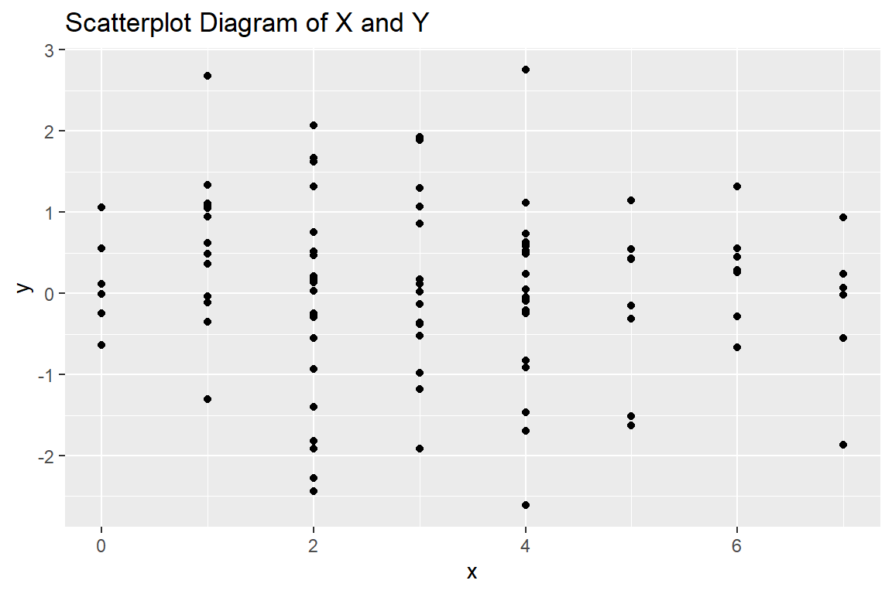

| Status |
|---|
| This chapter is currently a dumping ground for ideas, and we don’t recommend reading it. |
4 Simple Linear Regression
library(easystats)
library(ggplot2)Introduction
Linear regression is among the fundamental concepts in Econometrics. In linear regression, we try to estimate how much one variable will change, with response to a change in another variable. The controlled variable is called predictor or independent variable. The variable, which changes as a response to a change in the controlled variable is called response or dependent variable. In R, we denote such relationship with y~x, where y is the response and x is the predictor. The notation y~x is read as “y explained by x”.
In mathematical terms, we are fitting a linear equation between x and y. When we write y~x, it means y = ax + b, and we need to find a and b from the data points given.
Let’s understand what it means for us. The workflow for the linear regression problem would be:
We would be given some observations of both - independent variable and dependent variable.
we graph these data points, using a coordinate system (like Cartesian system). Each value is represented by a dot. Such a diagram is called a scatter-plot diagram.
After graphing the points onto a scatter plot diagram, linear regression analysis seeks to find the best-fit line to fit the points as closely as possible.
This best-fit line is a line, which minimizes the distance between the points falling above or below the lines.
Linear Regression 101: What Is It And How Is It Done? | Fiverr
Principles of Linear Regression (Gauss Markov)
Example in R
For understanding regression, we can generate a dummy dataset, and create a regression model on the basis of the data.
dummy <- data.frame(y = rnorm(100),x = rpois(100,3))In the code above, we have created a dummy data. The rnorm(n) function generates n number of data points based on normal distribution. The default mean and standard deviation are 0 and 1 respectively. Similarly, the rpois(n,l) function generates n number of data points based on poisson distribution, with = l. We can plot the data to explore it visually. We will use ggplot2 package to create this scatterplot diagram.
ggplot(dummy)+aes(x,y)+geom_point()+labs(title = "Scatterplot Diagram of X and Y")
Now we can create a regression model from this dataset.
model1 <- lm(y~x, data = dummy)This model stores a lot of information, but it is difficult to understand and get the meaning out of it. So, one way is to use the summary function on this model1 object.
summary(model1)
#>
#> Call:
#> lm(formula = y ~ x, data = dummy)
#>
#> Residuals:
#> Min 1Q Median 3Q Max
#> -2.6342 -0.4445 0.0324 0.6090 2.7336
#>
#> Coefficients:
#> Estimate Std. Error t value Pr(>|t|)
#> (Intercept) 0.24693 0.20632 1.197 0.234
#> x -0.05627 0.05672 -0.992 0.324
#>
#> Residual standard error: 1.051 on 98 degrees of freedom
#> Multiple R-squared: 0.009944, Adjusted R-squared: -0.0001589
#> F-statistic: 0.9843 on 1 and 98 DF, p-value: 0.3236The problem with this summary object is that it is not a data.frame. It is difficult to put this object in a research paper or any other academic submisison. So, we can use the easystats packages for this. The model_parameters function would show us the parameters (aka coefficients) of the model, and the model_performance function will show us the effectiveness of the regression model. We can also use the display function to beautify the table in the output.
model1 |> model_parameters() |>
display(format = "markdown", caption = "Regression Parameters")| Parameter | Coefficient | SE | 95% CI | t(98) | p |
|---|---|---|---|---|---|
| (Intercept) | 0.25 | 0.21 | (-0.16, 0.66) | 1.20 | 0.234 |
| x | -0.06 | 0.06 | (-0.17, 0.06) | -0.99 | 0.324 |
model1 |> model_performance() |>
display(format = "markdown", caption = "Regression Effectiveness")| AIC | AICc | BIC | R2 | R2 (adj.) | RMSE | Sigma |
|---|---|---|---|---|---|---|
| 297.71 | 297.96 | 305.53 | 9.94e-03 | -1.59e-04 | 1.04 | 1.05 |
Interpretation of Regression Model
- The intercept is statistically non-significant and negative (beta = -0.16, 95% CI [-0.59, 0.27], t(98) = -0.74, p = 0.461; Std. beta = -5.50e-18, 95% CI [-0.20, 0.20]).
- The effect of x is statistically non-significant and positive (beta = 0.07, 95% CI [-0.04, 0.17], t(98) = 1.24, p = 0.219; Std. beta = 0.12, 95% CI [-0.07, 0.32]).
The model explains a statistically not significant and very
weak proportion of variance (R^2 = 0.02, F(1, 98) = 1.53, p =
0.219, adj. R^2 = 5.32e-03).